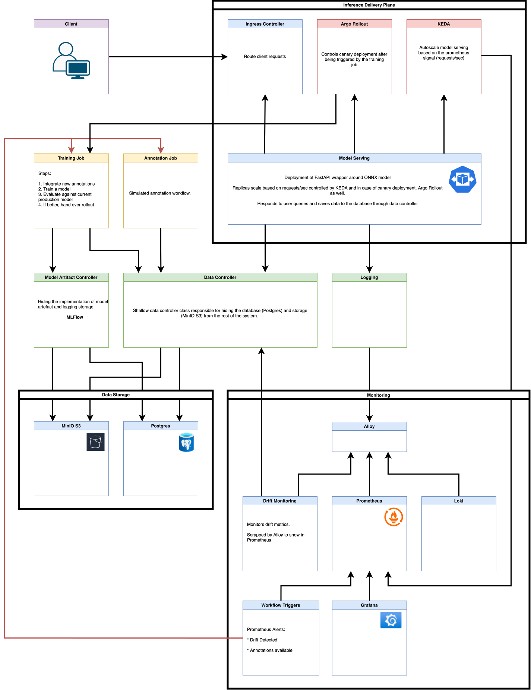
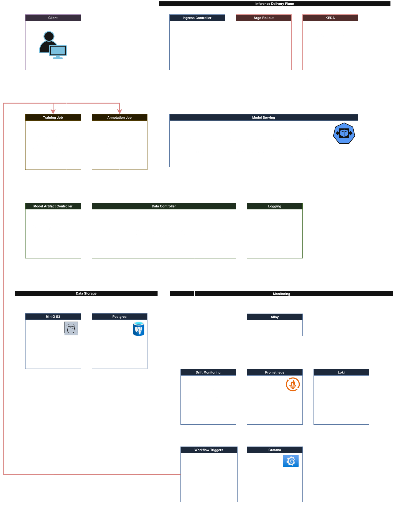

Level 2: Container Diagram
The system decomposes into containers (services, databases, external platforms) organized by operational concern. This level shows data flows between containers and their responsibilities.


Component legend
| Colour | Meaning |
|---|---|
| Blue border | Continuous service — runs as a Docker container, may be scaled |
| Green border | Facade — hides a backend, swappable without touching callers |
| Yellow border | Triggered jobs |
Platform & Orchestration
Kubernetes controllers and operators that manage autoscaling, canary deployments, and job orchestration. These services provide the infrastructure that other components depend on.
| Component | Type | Purpose |
|---|---|---|
| KEDA | Autoscaler | Watches Prometheus for request-rate metrics (req/sec). Scales Serving pods horizontally based on demand. |
| Argo Rollouts | Deployment Controller | Manages canary rollouts for model serving. Patches NGINX Ingress annotations to split traffic gradually between stable and canary models, runs PSI-based analysis, and handles automated promotion/rollback. |
| Argo Workflows | Job Orchestrator | Orchestrates the retraining pipeline. Manages the DAG of sampling → annotation → training as event-driven or scheduled workflows. |
Related Modules & Decisions
| Type | Reference | Details |
|---|---|---|
| ADR | 002: Canary Rollouts | Canary deployment strategy and Argo Rollouts integration |
| ADR | 006: KEDA Autoscaling | Request-rate driven autoscaling |
| ADR | 003: Local Kubernetes | Local Kubernetes setup (k3s) for development |
Online Serving
Handles synchronous prediction requests from clients. The serving container runs ONNX inference and persists predictions and artifacts through the Data Controller facade. Serving pods are automatically scaled by KEDA and deployed via Argo Rollouts for safe canary promotion (see Platform & Orchestration).
| Component | Type | Purpose |
|---|---|---|
| Serving | Service | FastAPI inference server (/predict, /health endpoints). Runs ONNX model inference on images. Persists prediction records and artifacts via Data Controller. |
| NGINX Ingress | Platform | Ingress controller. Routes /predict traffic to Serving pods. During canary rollouts, Argo Rollouts patches ingress annotations (canary weight) to split traffic between stable and canary models; NGINX reads these annotations and splits traffic accordingly. |
Related Modules & Decisions
| Type | Reference | Details |
|---|---|---|
| Module | Serving | Request handling, inference, and persistence logic |
| ADR | 002: Canary Rollouts | NGINX Ingress canary strategy for safe model promotion |
| ADR | 006: KEDA Autoscaling | Request-rate based horizontal pod autoscaling |
Offline Retraining Loop
Implements continuous model improvement through event-driven retraining triggered by data quality signals (drift detection). The loop: sample predictions → annotate → retrain → evaluate → promote. Orchestrated by Argo Workflows (see Platform & Orchestration).
| Component | Type | Purpose |
|---|---|---|
| Sampling | Service | Selects candidate predictions for annotation based on uncertainty, distribution shift, or active learning strategies. |
| Annotation | Service | Labeling job executor. Receives sampled predictions and produces labels (e.g., user feedback, crowdsourced annotations). |
| Training | Service | Retraining and evaluation job executor. Integrates new labels, retrains model, evaluates against test set. Produces candidate model artifacts. |
Related Modules & Decisions
| Type | Reference | Details |
|---|---|---|
| Module | Sampling | Candidate selection logic and strategies |
| Module | Annotation | Annotation pipeline and labeling |
| Module | Training | Model retraining and evaluation |
| ADR | 001: Event-Driven Retraining | Event-triggered model retraining architecture |
Storage Layer
Abstracts persistence backends for predictions, model artifacts, and logs. Decouples application code from specific storage technologies.
| Component | Type | Purpose |
|---|---|---|
| Data Controller | Facade | Abstracts Postgres and MinIO. Used by Serving and Annotation for prediction records and image artifacts. |
| Model Artifact Controller | Facade | Abstracts MLFlow. Used by Training and Serving for model versioning, artifact storage, and experiment tracking. |
| Postgres | Database | Relational store for prediction records, metadata, and operational state. |
| MinIO | Object Storage | S3-compatible storage for image artifacts, model weights, and training datasets. |
| MLFlow | Registry | Model registry, experiment tracking, and artifact repository for training outputs. |
Related Modules & Decisions
| Type | Reference | Details |
|---|---|---|
| Module | Data Controller | Storage abstraction for predictions |
| Module | Model Artifact Controller | Storage abstraction for model artifacts |
| ADR | 004: MLflow Artifact Storage | MLFlow as model and artifact repository |
| ADR | 007: Model Artifact Controller Abstraction | Facade pattern for artifact storage |
Monitoring & Observability
Collects metrics, logs, and traces from all services. Provides operational visibility and triggers alerts.
| Component | Type | Purpose |
|---|---|---|
| Prometheus | Metrics Store | Collects and stores service and model metrics. Scraped by all services (Serving, Training, etc.). Data source for autoscaling and dashboards. |
| Grafana | Visualization | Dashboards for operational and model metrics. Alerting rules for anomalies and SLO violations. |
| Loki | Log Aggregator | Collects structured logs from all services. Indexed by labels (service, pod, level). Queryable alongside metrics. |
| Alloy | Collection Agent | Deployed as sidecar/DaemonSet. Routes metrics and logs from services to Prometheus and Loki. |
| Drift Detector | Service | (Optional) Separate analytics component or inline within Training. Compares production data distribution to training data. Signals when drift exceeds threshold. |
Related Modules & Decisions
| Type | Reference | Details |
|---|---|---|
| ADR | 005: Prometheus Monitoring & Alerting | Metrics collection and alerting strategy |